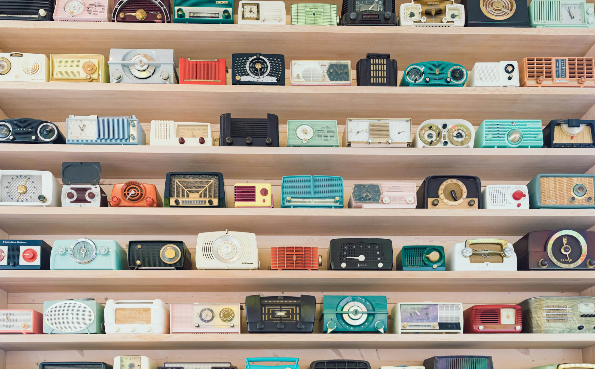

Notes
How to use clamps
- Fluid type
- clamps ()
- Utopia.fyi
Don't forget to find out about this!

Code
Adaptive photo layout with flexbox
25 October 2026
Code
Random practices while following along The Odin Project Foundations Flexbox classes
21 October 2026
Notes
Don't forget to find out about this!
Notes
18 October 2026